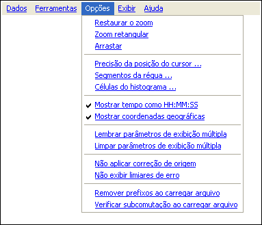

| Menu Opções |
|
O menu “Opções” provê acesso a
opções de exibição e ajustes de vários elementos do R_DAT. Através dele
é
possível realizar os seguintes ajustes:
- Alterar o modo
de operação do mouse;
- Alterar ajustes
do cursor, régua e histograma;
- Alterar características de exibição da posição do cursor;
- Alterar
comportamento das funções de exibição múltipla;
- Alterar configurações dos ajustes de curva;
- Alterar a opção de remoção dos prefixos de telemetria ao carregar arquivo.
- Alterar a opção de verificação de subcomutação ao carregar arquivo.

| |
Início |
Restaurar o
zoom |
|